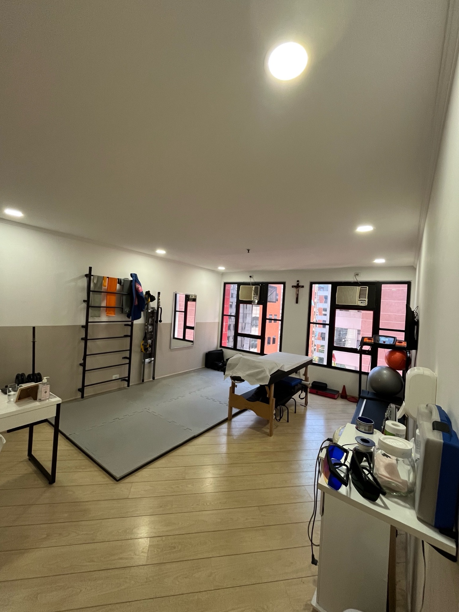

Da dor ao retorno ao esporte com um plano estruturado e individualizado
Agendar avaliaçãoO primeiro passo para tratar a dor e voltar a treinar com segurança
Entendemos seu corpo, sua dor e seu esporte para montar um plano totalmente direcionado à sua recuperação e performance.
Duração aproximada: 1h30
Tenho sessões com a Marissa devido a cirurgias no joelho e ombro. Ela é muito atenciosa e me ajudou muito com as dores e meus treinos. Hoje já consigo escalar e treinar jiu-jitsu novamente.
Daniely Lettieri Jiu-jitsuSempre muito atenciosa, explica tudo com clareza e passa exercícios. Me ajudou muito a aliviar minhas dores.
Ana Paula FernandesA melhor profissional que já conheci. Atendimento cuidadoso e excelente resultado.
Julia TerinAqui, o atendimento é particular — sem limitações de convênio, com foco total na sua recuperação.

Marissa Alves
Fisioterapeuta ortopédica e esportiva
Sou fisioterapeuta com foco em quem treina e quer voltar ao esporte com segurança, sem precisar parar por dor.
Também vivo o que ensino: pratico musculação e jiu-jitsu.
Acredito que ninguém deveria precisar parar de treinar por causa de dor.

Rua Helena, 309 — Vila Olímpia
São Paulo
A 6 minutos da estação Vila Olímpia
Estacionamento gratuito no prédio
Não. Ajustamos sua rotina para manter o treino com segurança.
Depende do caso, mas sempre com plano estruturado.
Atendimento particular com possibilidade de reembolso.